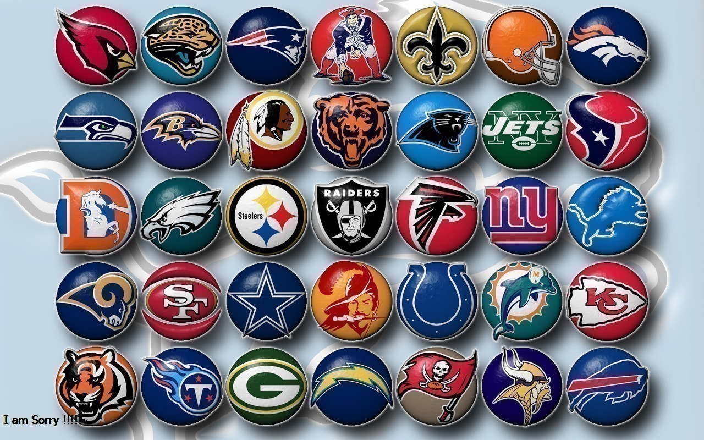

Team

A football team is a group of players selected to play together in the
various team sports known as football. Such teams could be selected to play in a
match against an opposing team, to represent a football club, group, state or nation,
an all-star team or even selected as a hypothetical team (such as a Dream Team or Team of
the Century) and never play an actual match.There are several varieties of football, notably
association football, gridiron football, Australian rules football, Gaelic football, rugby
league and rugby union. The number of players selected for each team within these varieties
and their associated codes can vary substantially. Sometimes, the word "team" is limited to
those who play on the field in a match and does not always include other players who may take
part as replacements or emergency players. "Football squad" may be used to be inclusive of
these support and reserve players.
The term football club is the most commonly used for a sports club which is an organised
or incorporated body with a president, committee and a set of rules responsible for ensuring
the continued playing existence of one or more teams which are selected for regular competition
play (and which may participate in several different divisions or leagues). The oldest football
clubs date back to the early 19th century. The words team and club are sometimes used interchangeably
by supporters, although they typically refer to the team within the club playing in the highest
division or competition.
Football is a family of team sports that involve, to varying degrees, kicking a ball to score a goal.
Unqualified, the word football normally means the form of football that is the most popular where the
word is used. Sports commonly called football include association football (known as soccer in some
countries); gridiron football (specifically American football or Canadian football); Australian rules
football; rugby football (either rugby league or rugby union); and Gaelic football.[1][2] These various
forms of football are known as football codes.
There are a number of references to traditional, ancient, or prehistoric ball games played in many different
parts of the world.[3][4][5] Contemporary codes of football can be traced back to the codification of these
games at English public schools during the 19th century.[6][7] The expansion of the British Empire allowed
these rules of football to spread to areas of British influence outside the directly controlled Empire.[8]
By the end of the 19th century, distinct regional codes were already developing: Gaelic football, for example,
deliberately incorporated the rules of local traditional football games in order to maintain their heritage.[9]
In 1888, The Football League was founded in England, becoming the first of many professional football
competitions. During the 20th century, several of the various kinds of football grew to become some of
the most popular team sports in the world.